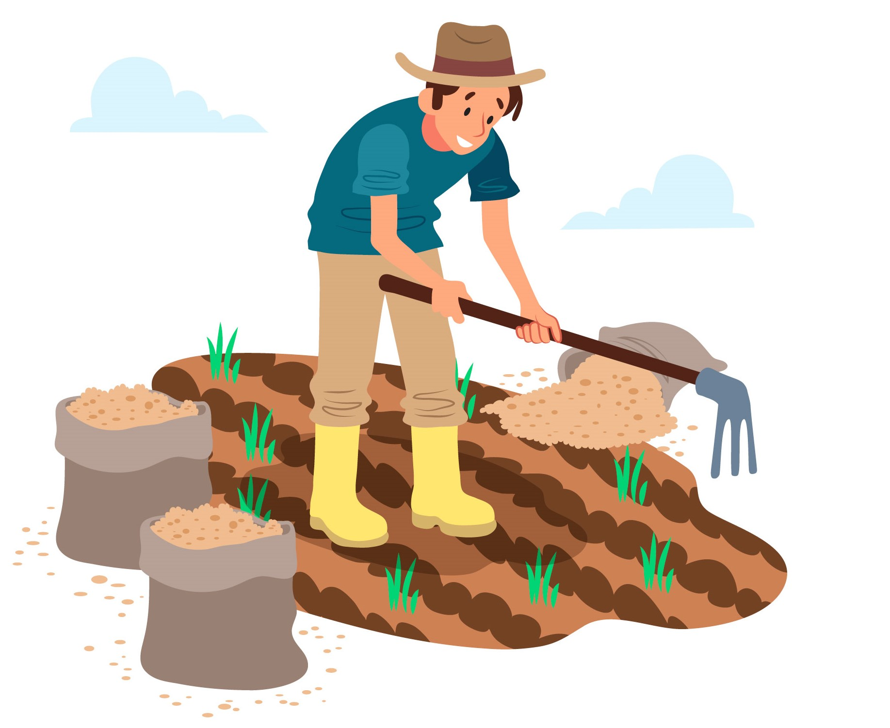

KRIषी MANदिर
भविष्य यहाँ है,
अभी तलाश करना प्रारंभ करें.
हमारा समुदाय देश भर के किसानों से बना है, जो विभिन्न प्रकार की फसलों और पशुओं में काम करते हैं। चाहे आप एक अनुभवी समर्थक हों या अभी शुरुआत कर रहे हों, आपको यहां ज्ञान और विशेषज्ञता का खजाना मिलेगा।
